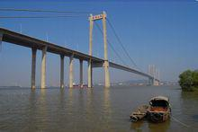
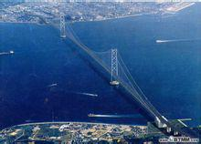

悬索桥，又名吊桥（suspension bridge）指的是以通过索塔悬挂并锚固于两岸（或桥两端）的缆索（或钢链）作为上部结构主要承重构件的桥梁。其缆索几何形状由力的平衡条件决定，一般接近抛物线。从缆索垂下许多吊杆，把桥面吊住，在桥面和吊杆之间常设置加劲梁，同缆索形成组合体系，以减小活载所引起的挠度变形。
悬索桥的构造方式是19世纪初被发明的，许多桥梁使用这种结构方式。现代悬索桥，是由索桥演变而来。适用范围以大跨度及特大跨度公路桥为主，当今大跨度桥梁全采用此结构。是大跨径桥梁的主要形式。
悬索桥是以承受拉力的缆索或链索作为主要承重构件的桥梁，由悬索、索塔、锚碇、吊杆、桥面系等部分组成。悬索桥的主要承重构件是悬索，它主要承受拉力，一般用抗拉强度高的钢材（钢丝、钢缆等）制作。由于悬索桥可以充分利用材料的强度，并具有用料省、自重轻的特点，因此悬索桥在各种体系桥梁中的跨越能力最大，跨径可以达到1000米以上。1998年建成的日本明石海峡桥的跨径为1991米，是目前世界上跨径最大的桥梁。悬索桥的主要缺点是刚度小，在荷载作用下容易产生较大的挠度和振动，需注意采取相应的措施。
按照桥面系的刚度大小，悬索桥可分为柔性悬索桥和刚性悬索桥。柔性悬索桥的桥面系一般不设加劲梁，因而刚度较小，在车辆荷载作用下，桥面将随悬索形状的改变而产生S形的变形，对行车不利，但它的构造简单，一般用作临时性桥梁。刚性悬索桥的桥面用加劲梁加强，刚度较大。加劲梁能同桥梁整体结构承受竖向荷载。除以上形式外，为增强悬索桥刚度，还可采用双链式悬索桥和斜吊杆式悬索桥等形式，但构造较复杂。
桥面支承在悬索（通常称大揽）上的桥称为悬索桥。英文为Suspension Bridge，是“悬挂的桥梁”之意，故也有译作“吊桥”的。“吊桥”的悬挂系统大部分情况下用“索”做成，故译作“悬索桥”，但个别情况下，“索”也有用刚性杆或键杆做成的，故译作“悬索桥”不能涵盖这一类用桥。和拱肋相反，悬索的截面只承受拉力。简陋的只供人、畜行走用的悬索桥常把桥面直接铺在悬索上。通行现代交通工具的悬索桥则不行，为了保持桥面具有一定的平直度，是将桥面用吊索挂在悬索上。与拱桥用刚性的拱肋作为承重结构不同，其采用的是柔性的悬索作为承重结构。为了避免在车辆驶过时，桥面随着悬索一起变形，现代悬索桥一般均设有刚性梁（又称加劲梁）。桥面铺在刚性梁上，刚性梁吊在悬索上。现代悬索桥的悬索一般均支承在两个塔柱上。塔顶设有支承悬索的鞍形支座。承受很大拉力的悬索的端部通过锚碇固定在地基中，也有个别固定在刚性梁的端部者，称为自锚式悬索桥。
相对于其它桥梁结构悬索桥可以使用比较少的物质来跨越比较长的距离。悬索桥可以造得比较高，容许船在下面通过，在造桥时没有必要在桥中心建立暂时的桥墩，因此悬索桥可以在比较深的或比较急的水流上建造。
悬索桥比较灵活，因此它适合大风和地震区的需要，比较稳定的桥在这些地区必须更加坚固和沉重。
悬索桥中最大的力是悬索中的张力和塔架中的压力。由于塔架基本上不受侧向的力，它的结构可以做得相当纤细，此外悬索对塔架还有一定的稳定作用。假如在计算时忽视悬索的重量的话，那么悬索形成一个双曲线。这样计算悬索桥的过程就变得非常简单了。
老的悬索桥的悬索一般是铁链或联在一起的铁棍。现代的悬索一般是多股的高强钢丝。
假如塔架要建在水上的话，在塔架要站立的地方首先要使用沉箱来排挤软的地层，来建立一个固定的地基。假如下面的岩石层非常深无法用沉箱达到的话那么要使用深钻的方式达到岩石层或建立非常大的人造的混凝土地基。这个地基一直要延伸出水面。假如塔架要建在陆地上，它的地基必须非常深，在地基上用混凝土、巨石和钢结构建立桥墩。有些桥的桥墩是桥面的一部分，在这种情况下桥墩的高度至少要达到桥面的高度。
在塔架的顶部有一个被称为鞍的光滑的结构。桥完成后这个鞍可能要被固定住。锚锭被固定在岩石中，沿着未来悬索的路径纤起一根或一组暂时的绳或线。另一股绳被悬挂在第一股绳的上方，在这股绳上一个滑车可以运行。这个滑车可以从一端的锚碇运行到另一端的锚碇。每股悬索需要一个这样的滑车，一股一般直径小于1厘米的高强度钢丝的一段被固定在一个锚碇中，另一端被固定在滑车上并被这样牵引到另一端的锚碇，然后被固定在这个锚碇上，然后滑车回到它开始的锚碇上去牵引下一股高强度钢丝或从它正所在的方向开始牵引下一股高强度钢丝。
钢丝被牵引后要进行防锈处理，这样多股高强度钢丝被牵引，连接两端的锚碇。一般这些钢丝的横截面是六角形的，它们被暂时地绑在一起，所有钢丝被牵引后它们被一个高压液压机构和其它钢丝挤压到一起，这样形成的悬索的横截面是圆形的。
在悬索上在等距离的位置上要加上索夹，事先计算好长度的悬挂索被架在索夹上。这些悬挂索的另一端将来要固定桥面，使用专门的起重机，桥面被一块接着一块地挂在悬挂索上。这个起重机可以自己挂在悬索上或挂在特别的临时的索上。桥面可以从桥下的船上吊起或从桥的两端运到它们应该放到的地方。当所有桥面被挂上后，通过调节悬索可以使桥面达到计划的曲线。一般水面上的桥的桥面呈拱形，以便桥下船只通行。陆上的悬索桥的桥面一般是平的。
桥面完成后可以进行其它细节工作，比如排水防水系统、伸缩缝、装灯、栏杆、涂漆、铺路等等。
自锚式悬索桥的上部结构包括：主梁、主缆、吊杆、主塔四部分。传力路径为：桥面重量、车辆荷载等竖向荷载通过吊杆传至主缆承受，主缆承受拉力，而主缆锚固在梁端，将水平力传递给主梁。由于悬索桥水平力的大小与主缆的矢跨比有关，所以可以通过矢跨比的调整来调节主梁内水平力的大小，一般来讲，跨度较大时，可以适当增加其矢跨比，以减小主梁内的压力，跨度较小时，可以适当减小其矢跨比，使混凝土主梁内的预压力适当提高。由于主缆在塔顶锚固，为了尽量减少主塔承受的水平力，必须保证边跨主缆内的水平力与中跨主缆产生的水平力基本相等，这可以通过合理的跨径比来调节，也可以通过改变主缆的线形来调节。
另外，自锚式悬索桥中的恒载由主缆来承受，而活载还需要由主梁来承受，所以主梁必须有一定的抗弯刚度，主梁的形式以采用具有一定抗弯刚度的箱形断面较为合适。
采用自锚式结构体系，和地锚式相比可以不考虑地质条件的影响，而且由于免去了巨大的锚锭，降低了工程造价。采用自锚，将主缆锚固于加劲梁之上，相比同等跨径的其他桥型，更有其特有的曲线线形，外观优雅，而且现代桥梁除了满足自身的结构要求外，也越来越注重景观设计，其发展前途很大。
自锚式悬索桥采用混凝土加劲梁，虽然增加了体系的自重，但也增加了体系的刚度，在一定的跨度允许范围内，使桥梁的安全性指标、适用性指标、经济性指标、美观性指标得到了完美的统一。对结构受力而言，由于采用了自锚体系，将索锚固于主梁上，利用主梁来抵抗水平轴力，对于混凝土这种抗压性能好的材料来说无疑是相当于提供了。免费的。预应力。因此采用的是普通钢筋混凝土结构，节省了大量的预应力器具，而且又由于混凝土材料相对于钢材料的经济性，工程造价大大减少。但是由于混凝土的抗拉、弯的性能较差，所以对其进行受力分析时应综合考虑这个特点。
由于自锚式悬索桥的主缆拉力是传递给桥梁本身，而不是锚锭体，主缆拉力的水平分力在桥梁的上部结构中产生压力，如果两端不受约束的话，其垂直分力将使桥梁的两端产生上拔力。例如金石滩悬索桥桥采用了两种办法来抵抗这种上拔力：一是在锚块处设置拉压支座；二是在主桥和引桥的交接处设置牛腿，从而将引桥的重量压在主梁上。
由于主梁采用混凝土材料，设计和计算时必须计入混凝土的收缩）徐变等因素的影响，这就使得混凝土自锚式悬索桥的设计较钢桥更为复杂。
悬索桥一般主塔较高，塔身大多采用翻模法分段浇筑，在主塔连结板的部位要注意预留钢筋及模板支撑预埋件。对于索鞍孔道顶部的混凝土要在主缆架设完成后浇筑，以方便索鞍及缆索的施工。主塔的施工控制主要是垂直度监控，每段混凝土施工完毕后，在第二天早晨8：00至9：00间温度相对稳定时，利用全站仪对塔身垂直度进行监控，以便调整塔身混凝土施工，应避免在温度变化剧烈时段进行测试，同时随时观测混凝土质量，及时对混凝土配比进行调整。
检查钢板顶面标高，符合设计要求后清理表面和四周的销孔，吊装就位，对齐销孔使底座与钢板销接。在底座表面进行涂油处理，安装索鞍主体。索鞍由索座、底板、索盖部分组成，索鞍整体吊装和就位困难；可用吊车或卷扬设备分块吊运组装。索鞍安装误差控制在横向轴线误差最大值3mm标高误差最大值3mm.装入座后，穿入销钉定位，要求鞍体底面与底座密贴，四周缝隙用黄油填实。
主梁混凝土的浇筑同普通桥一样，首先梁体标高的控制必须准确，要通过精确的计算预留支架的沉降变形；其次，梁体预埋件的预埋要求有较高的精度，特别是拉杆的预留孔道要有准确的位置及良好的垂直度，以保证在正常的张拉过程中拉杆始终位于孔道的正中心。
主梁浇筑顺序应从两端对称向中间施工，防止偏载产生的支架偏移，施工时以水准仪观测支架沉降值，并详细记录。待成型后立即复测梁体线型，将实际线型与设计线型进行比较，及时反馈信息，以调整下一步施工。
根据结构特点，主缆架设可以采取在便桥或已浇筑桥面外侧直接展开，用卷扬机配合长臂汽车吊从主梁的侧面起吊安装就位。
缆索的支撑：为避免形成绞，将成圈索放在可以旋转的支架上。在桥面每4-5m，设置索托辊（或敷设草包等柔性材料。），以保证索纵向移动时不会与桥面直接摩擦造成索护套损坏。因锚端重量较大，在牵引过程中采用小车承载索锚端。
缆索的牵引：牵引采用卷扬机，为避免牵钢丝绳过长，索的纵向移动可分段进行，索的移动分三段，分别在二桥塔和索终点共设三台卷扬机。
缆索的起吊：在塔的两侧设置导向滑车，卷扬机固定在引桥桥面上主桥索塔附近，卷扬机配合放索器将索在桥面上展开。主要用吊车起吊，提升时避免索与桥塔侧面相摩擦。当索提升到塔尖时将索吊入索鞍。在主索安装时，在桥侧配置了3台吊机，即锚固区提升吊机、主索塔顶就位吊机和提升倒链。
当拉索锚固端牵引到位时，用锚固区提升吊机安装主索锚具，并一次锚固到设计位置，吊机起重力在5t以上；主索塔顶就位吊机是在两座塔的二侧安置提升高度大于25m时起重力大于45t的汽车吊，用于将主索直接吊上塔顶索鞍就位，在吊装过程中为避免索的损伤，索上吊点采用专用索夹保护；主索在提升到塔顶时，由于主跨的索段比较长，为确保吊机稳定，可在适当的时候用塔上提升倒链协助吊装。
在制作过程中要在缆上进行准确标记。标记点包括锚固点、索夹、索鞍及跨中位置等。安装前按设计要求核对各项控制值，经设计单位同意后进行调整，按照调整后的控制值进行安装，调整一般在夜间温度比较稳定的时间进行。调整工作包括测定跨长、索鞍标高、索鞍预偏量、主索垂直度标高、索鞍位移量以及外界温度，然后计算出各控制点标高。
主缆的调整采用75t千斤顶在锚固区张拉。先调整主跨跨中缆的垂直标高，完成索鞍处固定。调整时应参照主缆上的标记以保证索的调整范围。主跨调整完毕后，边跨根据设计提供的索力将主缆张拉到位。
为避免索夹的扭转，索夹在主索安装完成后进行。首先复核工厂所标示的索夹安装位置，确认后将该处的PE护套剥除。索夹安装采用工作篮作为工作平台，将工作篮安装在主缆上（或同普通悬索桥一样搭设猫道），承载安装人员在其上进行操作。索夹起吊采用汽吊，索夹安装的关键是螺栓的坚固，要分二次进行）索夹安装就位时用扳手预紧，然后用扭力扳手第一次坚固，吊杆索力加载完毕后用扭力扳手第二次紧固。索夹安装顺序是中跨从跨中向塔顶进行，边跨从锚固点附近向塔顶进行。
吊杆在索夹安装完成后立即安装。小型吊杆采用人工安装，大型吊杆采用吊车配合安装。
由于自锚式悬索桥在荷载的作用下呈现出明显的几何非线性，因此吊杆的加载是一个复杂的过程。主缆相对于主梁而言刚度很小。如果吊杆一次直接锚固到位，无论是张拉设备的行程或者张拉力都很难控制而全桥吊杆同时张拉调整在经济上是不可行的。为了解决这个问题，就必须根据主梁和主缆的刚度、自重采用计算机模拟的办法，得出最佳加载程序。并在施工过程中，通过观测，对张拉力加以修正。
吊索张拉自塔柱和锚头处开始使用8台千斤顶对称张拉。吊索底端冷铸锚具，其锚杯铸有内外螺纹，内螺纹用于连接张拉时的连接杆以便千斤顶作用，外螺纹用螺母连接后将吊杆固定于锚垫板上。由于主缆在自重状态标高较高，导致吊杆在加载之前下锚头处于主梁梁体之内，因此在张拉时需配备临时工作撑脚和连接杆。
第一次张拉施加1/4的设计力将每一根吊杆临时锁定！第二次顺序与第一次相同，按设计力张拉完，然后检测每一根吊杆的实际荷载，最后根据设计力具体对每一根吊杆进行微调。在吊索的张拉过程中，塔顶与鞍座一起发生位移！塔根承受弯矩！这样有可能产生塔根应力超限的危险，为了不让塔根应力超限！张拉一定程度后，根据实际观测及计算分析！进行索鞍顶推，使塔顶回到原来无水平位移时的状态，如此反复后！将每根吊索的张拉力调整至设计值。
施工过程的控制对于自锚式混凝土悬索桥每一道工序的施工均非常重要，尤其在索部施工过程中每一阶段每一根吊索的索力都要及时准确的反馈。吊索张拉时千斤顶的油表读数是一个直观反映，另外利用智能信号采集处理分析仪通过对吊索的振动测出其所受的拉力，两种方法互相检验，确保张拉时每一根吊索的索力与设计相吻合。
尽管自锚式悬索桥有着自身的缺点和局限，但在中小跨径上是一种很有竞争力的方案。这种在20世纪曾被忽视很长一段时间的桥型随着社会的进步又得到了人们的重新认识，自锚式悬索桥的设计理论和施工方法也将趋于完善，跨越能力也会不断提高，相信在以后会有越来越多的方案倾向于这种桥型。